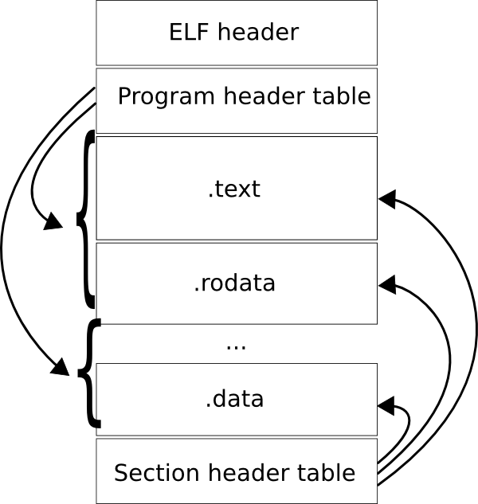
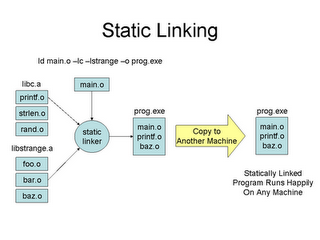
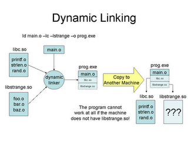

Why stali, why yet another linux system?
- Why not?
- Disproving some myths about static linking
- We want a suckless system to play with
- How much time has been wasted with dealing with all the mess?
- How much time have we wasted in configuring linux distros or BSDs?
- THIS MUST STOP
ELF - Executable and Linking Format
 (Source: Wikipedia)
Playing with ELF related tools
There are some tools to play with, for example:
- readelf
- objdump
- file
- nm
- ldd
- source code of ld and ELF generators
Playing with readelf
$ readelf -S lib.o
There are 9 section headers, starting at offset 0xa8:
Section Headers:
[Nr] Name Type Addr Off Size ES Flg Lk Inf Al
[ 0] NULL 00000000 000000 000000 00 0 0 0
[ 1] .text PROGBITS 00000000 000034 00001c 00 AX 0 0 4
[ 2] .data PROGBITS 00000000 000050 000000 00 WA 0 0 4
[ 3] .bss NOBITS 00000000 000050 000000 00 WA 0 0 4
[ 4] .comment PROGBITS 00000000 000050 000012 01 MS 0 0 1
[ 5] .note.GNU-stack PROGBITS 00000000 000062 000000 00 0 0 1
[ 6] .shstrtab STRTAB 00000000 000062 000045 00 0 0 1
[ 7] .symtab SYMTAB 00000000 000210 000090 10 8 7 4
[ 8] .strtab STRTAB 00000000 0002a0 000017 00 0 0 1
Key to Flags:
W (write), A (alloc), X (execute), M (merge), S (strings)
I (info), L (link order), G (group), x (unknown)
O (extra OS processing required) o (OS specific), p (processor specific)
Playing with nm
$ nm lib_shared.so
0000147c a _DYNAMIC
00001550 a _GLOBAL_OFFSET_TABLE_
w _Jv_RegisterClasses
0000146c d __CTOR_END__
00001468 d __CTOR_LIST__
00001474 d __DTOR_END__
00001470 d __DTOR_LIST__
00000464 r __FRAME_END__
00001478 d __JCR_END__
00001478 d __JCR_LIST__
00001568 A __bss_start
w __cxa_finalize@@GLIBC_2.1.3
00000410 t __do_global_ctors_aux
00000330 t __do_global_dtors_aux
00001564 d __dso_handle
w __gmon_start__
000003e7 t __i686.get_pc_thunk.bx
00001568 A _edata
00001570 A _end
00000448 T _fini
000002c8 T _init
00001568 b completed.5829
0000156c b dtor_idx.5831
000003b0 t frame_dummy
000003f8 T lib_bar
000003ec T lib_foo
static linking
(Source Prof. Douglas Thain)
Different kinds of static linking
- Smart static linking
- Linker links/extracts only those object files (from an archive) that expose required symbols
- This has implications on the size of a static executable
- This is the usual case nowadays
- Dumb static linking
- Linker links full blown archives
- Very unusual nowadays, was usual back in the 60s when people kept things in simple and clean states due to hardware limitations
dynamic linking
(Source Prof. Douglas Thain)
dynamic linking vs dynamic loading
- Dynamic linking is not dynamic loading, dynamic loading is:
- dlopen
- dlsym
- dlerror
- dlcose
- OS deals with dynamic linking at execution time
Common pitfalls with dynamic linking
$ ldd run_dynamic
linux-gate.so.1 => (0xb77ec000)
libc.so.6 => /lib/libc.so.6 (0xb7693000)
/lib/ld-linux.so.2 (0xb77ed000)
lib_shared.so => not found
libX11.so.6 => not found
libXinerama.so.1 => not found
libxcb.so.1 => not found
libdl.so.2 => not found
libXext.so.6 => not found
libXau.so.6 => not found
libXdmcp.so.6 => not found
Common pitfalls with dynamic linking
$ inkscape
inkscape: /usr/lib/libxml2.so: no version information available (required by /usr/lib/libxslt.so.1)
inkscape: /usr/lib/libxml2.so: no version information available (required by /usr/lib/libxslt.so.1)
inkscape: /usr/lib/libxml2.so: no version information available (required by /usr/lib/libxslt.so.1)
inkscape: /usr/lib/libxml2.so: no version information available (required by /usr/lib/libxslt.so.1)
inkscape: /usr/lib/libxml2.so: no version information available (required by /usr/lib/libxslt.so.1)
inkscape: /usr/lib/libxml2.so: no version information available (required by /usr/lib/libxslt.so.1)
^C
etc
Why was dynamic linking invented?
- To make executables smaller? No, see later
- To make executables faster? No, see later
- To make executables more secure? Not really, see later
- To make the process execution simpler? No, more the opposite ;)
- It was invented to change code during runtime
Hacks and quirks with dynamic linking
- Starting dynamic executables is slower (→ relocation), so LD_PRELOAD was invented
- But LD_PRELOAD doesn't make the OS part of execution simpler, more the contrary
- But LD_PRELOAD introduces nice security problems, for example:
- LD_PRELOAD=/home/foo/ld-linux.so.2 ping google.com
- Maintaing library paths is no joy, risking version problems, instabilities
- We don't need dynamic linking to use dynamic loading, you can have your plugins if you really want
What's wrong with all the other mess?
- Libraries are bloated
- configure hell
Joe sez static executables are huge!
- Why are static executables huge?
- Library bloat! glibc is a disaster - simple hello world results in 600kb overhead for no reason
- Use less bloated libraries, start here:
- uClibc
- dietlibc
- bionic
- even BSD libc is a lot better than glibc
Joe sez static executables consume more memory!
- Really?
- Smart linking makes many static executables very small
- Let's do some maths...
Joe sez static executables consume more memory!
$ file grep
grep: ELF 32-bit LSB executable, Intel 80386, version 1 (SYSV), statically linked, stripped
$ du -h grep
68K grep
$ file /bin/grep
/bin/grep: ELF 32-bit LSB executable, Intel 80386, version 1 (SYSV), dynamically linked (uses shared libs), for GNU/Linux 2.6.18, stripped
$ du -h /bin/grep
84K /bin/grep
$ ldd /bin/grep
linux-gate.so.1 => (0xb7850000)
libpcre.so.0 => /lib/libpcre.so.0 (0xb780c000)
libc.so.6 => /lib/libc.so.6 (0xb76c5000)
/lib/ld-linux.so.2 (0xb7851000)
$ du -h /lib/libpcre.so.0.0.1
216K /lib/libpcre.so.0.0.1
$ du -h /lib/libc-2.11.1.so
1.5M /lib/libc-2.11.1.so
Joe sez static executables consume more memory!
- Ok so 68K vs 84K+216K+1.5M = 1836K
- Running multiple static greps still only consumes 68K, since the executable itself isn't loaded into memory twice
- Does this scale? Yes, for most parts it scales very well
- So is Joe wrong? Yes
- Even if he'd use a browser, compile time smart linking is still better than polluting the memory with dynamic libraries
- Hold on, isn't there paging? Isn't there... sorry, won't go there!
Joe sez static executables start slower (huge, eh!)!
Joe sez static executables are less secure!
- Presumably he also sez something about address space layout randomization (ASLR), eh?
- Come on, is he right? Well ASLR obscures a rather exotic attack vector. Obscurity is not really security.
- Dynamic executables suffer from various attacks that aren't found in static executables:
- If some dynamic library has some vulnerability, this means all executables that depend on it have that vulnerability too. Not so with static executables
- Remember LD_PRELOAD?
- There are ldd exploits and also versioning problems, see the FAQ for details
- The security impact through linking is not really important though, it doesn't make bad code better or worse.
Configure hell / autohell
- ./configure is a big mess
- To cut a long story short:
- It is painfully slow
- Often it is a lot bigger than the actual source it "configures"
- It fails, fails, fails when cross-compiling
- It wasted thousands of man years, if it wasn't there we'd saved a lot of time
- DON'T USE autohell or libfool!
- Of course we don't use it
What's a sane build system then?
- Remember our philosophy?
- make is ok (though not GNU make)
- We use mk from Plan 9 (part of 9base)
How does an mkfile look like?
< config.mk
TARG=lib_static.a lib_shared.so run_static run_dynamic harness
default:V: all
all:V: $TARG
clean:V:
rm *.o $TARG
%.$O: %.c
$CC $CFLAGS -c $stem.c -o $target
lib_static.a: lib.$O
$AR $target $prereq
lib_shared.so: lib.$O
$CC -shared -o $target $prereq
run_static: run.$O
$CC_CROSS $STATIC_LDFLAGS -L. -l_static -o $target $prereq
run_dynamic: run.$O
$CC $LDFLAGS -L. -l_shared -o $target $prereq
harness: harness.$O
$CC $LDFLAGS -o $target $prereq
Why is mk cool?
- Very clean and simple make language
- Static executable for x86 is 100kb
- Works the same on every platform, no BSD vs GNU make oddities
- stali build system is completely mk based
Embedded development
- stali's build system is great for embedded developments
- It completely overcomes autohell and libfail
Stali architecture - filesystem
- /bin - all executables go here
- /bin/kernel - linux kernel
- /dev - devices
- /etc - system config/program config/user setup/network setup
- /etc/rc.{start,stop} - init scripts
- /home/root - root's home
- /home/* - user home dirs
- /include - include files
- /lib - libraries for development
Stali architecture - filesystem
- /local - non default stuff
- /mnt - mount points
- /proc - linux procfs
- /share - man pages, locales ...
- /sys - linux sysfs
- /tmp - permanent storage ;)
- /var - spool, run, log, cache
- /usr - softlink /
Stali's linking approach
- Not every FLOSS program can be linked statically
- Not every FLOSS program can be linked against uClibc and friends
- Our approach is pragmatic:
- Link against smallest [C] library that can be found to suit a program (current selection eglibc, uClibc; future plan: bionic)
- If there is no way whatsoever, fall back to dynamic linking and bug its creators
- We want a usable system, stali is not intended to be yet another experiment.
- ldwrapper idea for GSoC 2010, subject to acceptance
Stali's package system
- There is no package system. Everything is intended to be rsync'able
- Binary diffing!
- /etc/ and config files have to be edited <config>.def approach
- No fancy installer/helpers, we don't want to waste time "configuring", we have to get work done
- The system just works by default - some open questions though
Stali kernel
- Specialised monolitic kernels for each device (notebook oriented, community help wanted)
- kernel collection idea:
- /bin/x200s
- /bin/t60
- /bin/eeepc
- If you require module support, feel free
- Monolitic kernels boot faster
- Future idea: put stali userland into initrd, network booting and use your disks for data only
Conclusions - nearly there...
- Stali is a unique approach to a new simple linux system
- Static executables are smaller
- Static executables start faster
- Static executables are more secure
- Static executables consume less memory
- Static linking eases embedded development
- Stali build system can be used for cross-compiling
Get in touch / Question time
- Help welcome!
- Subscribe dev@suckless.org
- Visit http://sta.li
- Learn more about static linking and use the tools
- Check out the code and make bug reports
- If you are a student, check GSoC 2010 if we are accepted
Seen this?